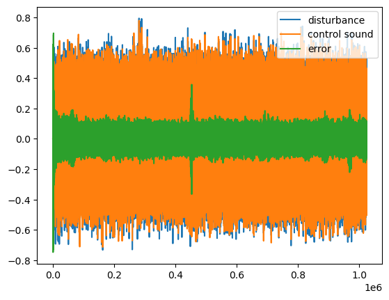
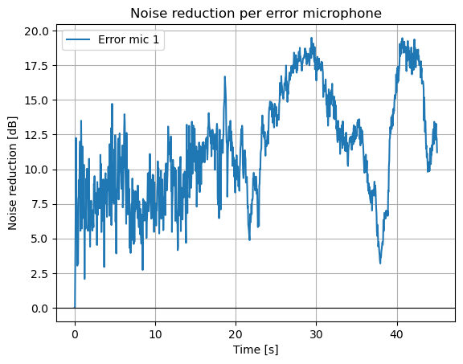

Single-channel control
Feedforward FxLMS, block and notch variants, modified and leaky adaptation, and harmonic control.
Browse notebooks ↗02 / Active noise control
A collection of Python notebooks for studying active noise control through simulated acoustic paths and adaptive algorithms.
I built this independent study in 2026, before Room Modal Optimizer. The implementations draw mainly on Stephen J. Elliott's work and selected research papers.
Overview
01Active noise control uses a loudspeaker to produce a sound that reduces an unwanted disturbance at an error microphone. The controller has to adapt while accounting for the acoustic path between loudspeaker and microphone.
These notebooks let me work through that process: model primary and secondary paths, update adaptive filters, and inspect error signals under different arrangements and stimuli. They are educational implementations and adaptations, rather than reproductions of published experiments.
Inside the library
Feedforward FxLMS, block and notch variants, modified and leaky adaptation, and harmonic control.
Browse notebooks ↗Multiple references, actuators and error microphones, with time- and frequency-domain experiments and tonal control.
See multichannel FxLMS ↗Offline identification and online modeling, including simultaneous modeling and control adapted from Hu, Xue and Lu.
See SMC experiment ↗Selected experiments
03A simulated arrangement with two reference microphones, four actuators and six error microphones. The notebook updates the control filters and plots the resulting error signal.
Open notebook ↗Separate feedforward and feedback experiments adapt concepts from their paper on ANC at a partially open window. The notebooks render WAV files for three disturbances in a direct-sound room model.
Notebook outputs


Plots are outputs of individual notebook runs; their values depend on the simulated paths, stimulus and adaptation settings.
Scope
05The library is a way to study algorithm behavior, not a validated real-time ANC system. The Karl and Sachau examples use direct-sound paths (max_order=0), so their results do not establish performance in a reflective room.
The step size calculated using the method in that paper was very small in these simulations. I scaled it experimentally for each stimulus; finding an appropriate step size automatically remains an open task. One online secondary-path modeling notebook also records an unsuccessful experiment for diagnosis.
Code and references
The README indexes the notebooks and sources, and the notebook introductions explain each experiment. There is no separate paper for this independent study.